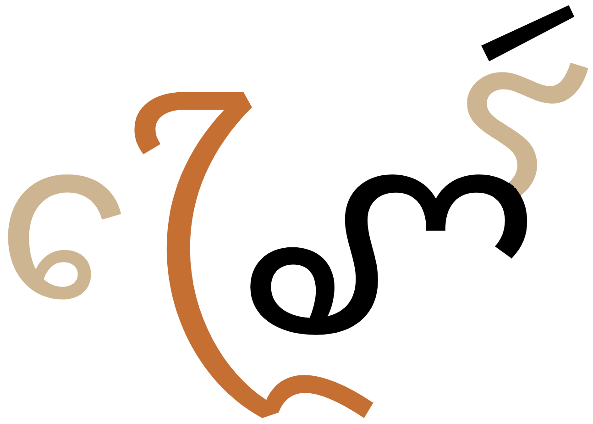

This page brings together basic information about the Cham script and its use for the Eastern Cham language. It aims to provide a brief, descriptive summary of the modern, printed orthography and typographic features, and to advise how to write Eastern Cham using Unicode.
It was difficult to find comprehensive sources that map the letters and marks to sounds using unambiguous IPA transcriptions, and it was often difficult to interpret what sound was meant by the varying transcriptions used. The sources tended to vary and seemingly contradict each other in some areas. What is included here is what was felt to be reasonably sure, but further review and research is needed.
Speakers of the Eastern Cham language number about 132,000 in Bình Thuận, Ninh Thuận, and Đồng Nai provinces in southern Vietnam, as well as in Hồ Chí Minh City. The Ethnologue estimates the L1 literacy rate to be 5%–10%. The Cham script is the primary orthography for the Eastern Cham, but the largely muslim Western Cham peoples of Cambodia prefer the Arabic script.eth Historically, the Eastern Cham script was learned by boys once they reached a certain age, but not by women and girls.ws
ꨀꨇꩉ ꨌꩌ
Coming to Southeast Asia with the expansion of Indian religions, Cham was one of the first scripts to develop from the Pallava script some time around 200 CE.ws
The Cham script is an abugida, ie. each consonant contains an inherent vowel sound. See the table to the right for a brief overview of features for the Eastern Cham orthography.
Cham text runs left-to-right in horizontal lines. There is no case distinction. Words are separated by spaces.
Cham represents native consonant sounds using 35 basic letters. The orthography has 4 medial consonants, some of which can be combined. Syllable codas are written using one of 15 final letters (distinguished from the original by a lengthened stroke to the right), or one of 3 combining marks.
Consonant clusters only occur when a syllable with a coda is followed by another syllable, and there are no conjunct forms or stacking involved.
Cham is an abugida with 2 inherent vowel sounds, usually pronounced a but pronounced ɨ after nasals, by default. An extra set of nasal consonant letters is available to write a syllable with an inherent a vowel (each having a special stroke below the main glyph), and an ɨ vowel sign is available to represent that sound after non-nasals.
Other vowels are written using one or more of 10 combining vowel signs per consonant (this page lists 7 multipart vowels). There is 1 pre-base vowel, but no circumgraphs (although multipart vowels may add glyphs to more than one side of the base).
Standalone vowels are written in one of 2 ways. The orthography has 6 independent vowel letters, and any other vowels are written by appending a vowel sign to the letter AA00.
The following represents the repertoire of the Eastern Cham language.
Click on the sounds to reveal locations in this document where they are mentioned.
Phones in a lighter colour are non-native or allophones. Source Wikipedia.
Vowel sounds
Plain vowels
Complex vowels
iaiɯʔiə
uauə
ea
oa
ɛə
ɔə
auʔaɪaʊ
Observation: The above long list of diphthongs is from Wikipedia. Other descriptions have different lists. For example , Smithas describes 4 which don't appear in the above list (uy, yu/iw, əy, ɛy), but only includes 2 of those that are there (aw, ay).
Consonant sounds
labial
alveolar
palatal
velar
glottal
stop
pb
td
c
kɡ͡ɣ
ʔ
pʰbʰ
tʰdʰ
cʰ
kʰɡʰ
ɓ
ɗ
affricate
d͡ʑ
d͡ʑʰ
fricative
s
h
nasal
m
n
ɲ
ŋ
approximant
w
l
j
trill/flap
ɾ
Tone
Cham is not a tonal language.
Structure
tbd
Vowels
Vowel summary table
The following table summarises the main vowel to character assigments.
ⓘ represents the inherent vowel. The right-hand column shows standalone vowels. A number of diphthongs listed in the phonology section are missing from this table.
Simple
ꨪ␣ꨫ␣␣ꨲ␣ⓘ␣ꨲꨩ␣␣ꨭ␣ꨭꨩ
ꨁ␣ꨀꨲ␣ꨂ
ꨯ␣ꨯꨩ
ꨅ
ꨮ␣ꨱ
ꨀꨮ
ꨯꨮ␣ꨯꨮꨩ␣ꨯꨱ
ꨃ␣ꨀꨯꨱ
ⓘ␣ꨩ
ꨀ
Complex
ꨬ
ꨰ␣ꨮꨭ
ꨄ
ɨ is an inherent vowel only after nasals (see just below).
Observation: The phonology sources say that the Cham language distinguishes between the phones e, ə, and ɛ, but it isn't clear how to write e. There is a letter than appears to be transcribed as eɪ, which is close - could this be a plain vowel rather than a diphthong?
Inherent vowel
ꨆ
kaU+AA06 CHAM LETTER KA
ꨗ
nɨU+AA17 CHAM LETTER NUE
Cham has 2 inherent vowels.
Most consonants have an inherent vowel a.
ꨓꨊꨪꩆ
For nasals, however, the default inherent vowel is ɨ or ə.
ꨀꨗꩀ
ꨟꨓꨩ
To produce a nasal followed by a Cham appends a special mark, called kai, below the nasal (see fig_na). In Unicode these combinations are fused and become atomic code points. For example:
ꨘꩌ
Inherent ɨ
Inherent a
ꨟ
ꨠ
ꨗ
ꨘ
ꨐ
ꨑ
ꨊ
ꨋ
The two types of nasal letter.
Combining marks used for vowels
ꨆꨪ
kiU+AA06 CHAM LETTER KA + U+AA2A CHAM VOWEL SIGN I
Cham uses the following dedicated combining marks for vowels. They may be used on their own, or in combination with others (see compositeV). They are all vowel signs.
ꨪ␣ꨫ␣ꨲ␣ꨭ␣ꨬ␣ꨯ␣ꨮ␣ꨱ␣ꨩ␣ꨰ
Two of the vowel signs are spacing marks, meaning that they consume horizontal space when added to a base consonant.
All vowel signs are typed and stored after the base consonant, and the glyph rendering system takes care of the positioning at display time. The glyphs used to represent vowels, whether alone or in multipart vowels, are arranged around a syllable onset, which may be 2 consonants, rather than just around the immediately preceding consonant. See prebase.
Pre-base vowel signs
ꨆꨯ
koU+AA06 CHAM LETTER KA + U+AA2F CHAM VOWEL SIGN O
ꨯ␣ꨰ
Cham has 2 characters whose glyphs, when rendered, appear before the consonant letter. For example:
ꨝꨯꨱꩍ
ꨚꨈꨯꨮꨩ
This combining mark is always typed and stored after the base consonant. The rendering process places the glyph before the base consonant. The first code point just above can be used on its own, but is also used in conjunction with other vowel combining marks as shown in the examples just above (see compositeV). In this case, it should be typed and stored immediately after the consonant and the other combining marks follow it.
When an orthographic syllable begins with a consonant cluster, the vowel sign is actually placed before the start of the onset, ie. to the left of the syllable as a whole. See fig_prebase.

A pre-base vowel glyph (light highlight colour) placed before both consonants in an onset cluster, rather than just before the consonant pronounced immediately before it.show composition
ꨚꨴꨯꨱꩃ
Multipart vowels
ꨆꨯꨮꨩ
kɛːU+AA06 CHAM LETTER KA + U+AA2F VOWEL SIGN O + U+AA2E VOWEL SIGN OE + U+AA29 VOWEL SIGN AA
The following 7 vowel sounds are represented using more than one combining mark:
ꨲꨩ␣ꨭꨩ␣ꨯꨩ␣ꨯꨮ␣ꨯꨮꨩ␣ꨯꨱ␣ꨮꨭ
Although vowel-related glyphs can appear on multiple sides of the base consonant, Cham has no circumgraphs, ie. no single code points that can simultaneously produce multiple glyphs.
Vowel length
iː is represented by a dedicated code point, but the other long vowels are indicated by adding another combining mark after the consonant, usually AA29.
Standalone vowels
ꨁ
ʔiU+AA01 CHAM LETTER I
Cham has 3 ways of writing standalone vowel sounds. The IPA transcriptions show a glottal stop before word-initial standalone vowels.
Six standalone vowels can be written using dedicated independent vowel letters.
ꨁ␣ꨂ␣ꨃ␣ꨅ␣ꨀ␣ꨄ
ꨀꨗꩀ
ꨁꨗꨤꩃ
ꨂꨣꩃ
The independent vowels may also appear inside a word at a syllable break.
ꨓꨂꩀta.ʔuk
Other standalone vowel sounds can be written using dependent vowels attached to AA00. In fact, that arrangement can also sometimes be used for the sounds normally represented by independent vowels.
This can also support medial consonants -j and -we,1, and other independent vowels may support combining vowels (which may be redundant or may alter the sound). For example:
ꨀꨳꨩ
Vowel absence
Cham has no code point to kill the inherent vowel. To write a consonant without a following vowel it is necessary to use one of the final consonants (see finals).
Vowel sounds to characters
This section maps Eastern Cham vowel sounds to common graphemes in the Cham orthography. Sounds listed as 'infrequent' are allophones, or sounds used for foreign words, etc.
The left column shows dependent vowels, and the right column independent vowel letters.
NOTE: Some areas of this list need examples to provide greater accuracy. Use with care.
Click on a grapheme to find other mentions on this page (links appear at the bottom of the page). Click on the character name to see examples and for detailed descriptions of the character(s) shown.
Plain vowels
i
ꨪ
ꨝꨪꨧꨬ
ꨁ
ꨁꨗꨤꩃ
iː
ꨫ
ꨨꨣꨫ
ɨ
ꨲ
ꨀꨲ
ɨː
ꨲꨩ
ꨀꨗꨲꩀ
u
ꨭ
ꨆꨭꩉ
ꨂ
ꨂꨣꩃ
uː
ꨭꨩ
o
ꨯ
ꨅ
oː
ꨯꨩ
ə
ꨮ
ꨌꨮꩀ
ꨀꨮ
əː
ꨱ
ɛ
ꨯꨮ
ꨃ
ɛː
ꨯꨮꨩ
ꨚꨈꨯꨮꨩ
ɔ
ꨯꨱ
ꨕꨯꨱꩃ
ꨀꨯꨱ
aː
ꨩ
ꨟꨓꨩ
ꨀ
ꨀꨧꨮꨭ
Complex vowels
eɪ
ꨬ
ꨚꨤꨬ
aɪ
ꨰ [needs clarification]
ꨄ
aʊ
ꨮꨭ
ꨔꨮꨭ
Consonants
Consonant summary table
The following table summarises the main consonant to character assigments.
The left column is lowercase, and the right uppercase.
Stops & affricates
ꨚ␣ꨛ␣ꨝ␣ꨡ␣ꨓ␣ꨕ␣ꨙ␣ꨌ␣ꨎ␣ꨆ␣ꨈ
ꨜ␣ꨞ␣ꨔ␣ꨖ␣ꨍ␣ꨏ␣ꨇ␣ꨉ
Fricatives
ꨦ␣ꨧ␣ꨨ
Nasals
ꨟ␣ꨠ␣ꨗ␣ꨘ␣ꨐ␣ꨑ␣ꨊ␣ꨋ
Approximants
trills & flaps
ꨥ␣ꨣ␣ꨤ␣ꨒ␣ꨢ
Medials:
ꨶ␣ꨴ␣ꨵ␣ꨳ
Finals:
ꩇ␣ꩅ␣ꩄ␣ꩀ␣ꩁ␣ꩌ␣ꩆ␣ꩂ␣ꩃ␣ꩋ␣ꩍ␣ꩉ␣ꩊ␣ꩈ
Basic consonants
Whereas the table just above takes you from sounds to letters, the following simply lists the basic consonant letters (however, since the orthography is highly phonetic there is little difference in ordering).
Observation: It's not clear why there are 2 letters for p.
Note that there are 2 sets of nasal letters. The first has the inherent vowel ɨ, which is the default for nasals, and the second, with the extra strokes below, has the normal default inherent vowel a (see inherent).
Onsets
ꨶ␣ꨴ␣ꨵ␣ꨳ
Cham has the 4 medial consonants shown just above. They are all combining marks, and should be typed and stored immediately after the initial consonant. They carry an inherent vowel, and kill the inherent vowel of the initial consonant.
ꨕꨶ
ꨆꨴꨩ
ꨆꨵꨮꨭ
ꨟꨣꨳꩍ
The multiple medials -rw-, -lj-, and -lw- can be found.e,2
Finals
Syllable codas are not followed by a vowel and, since Cham has no virama, they are written using a dedicated set of letters, or in 3 cases combining marks.
ꩇ␣ꩅ␣ꩄ␣ꩀ␣ꩁ␣ꩌ␣ꩆ␣ꩂ␣ꩃ␣ꩋ␣ꩍ␣ꨥ␣ꩉ␣ꩊ␣ꩈ
The final consonant letters are generally similar to the non-final consonants, but they have a lengthened stroke to the right side of the glyph.
ꨀꨆꨯꨱꩀ
ꨔꩆꨕꨩ
The major exception is ꨥ, which uses the same code point and glyph whether it appears as an initial or final consonant.
ꨎꨥꨩ
ꨟꨢꨥ
Examples of the combining marks.
ꨁꨗꨤꩃ
ꨚꨵꨭꩍ
ꨌꩌ
Consonant clusters
Cham has no conjuncts. Consonant clusters occur only in onsets and after a syllable coda, and those are handled by dedicated code points (see onsets and finals).
Consonant sounds to characters
This section maps Eastern Cham consonant sounds to common graphemes in the Cham orthography. Sounds listed as 'infrequent' are allophones, or sounds used for foreign words, etc.
The right-hand column shows medial or final consonants.
Click on a grapheme to find other mentions on this page (links appear at the bottom of the page). Click on the character name to see examples and for detailed descriptions of the character(s) shown.
Stops & affricates
p
ꨚ
ꨚꨈꨯꨮꨩ
ꨛ
ꩇ
pʰ
ꨜ
b
ꨝ
ꨝꨧꨬ
bʰ
ꨞ
ɓ
ꨡ
ꨡꨵꩃ
t
ꨓ
ꨓꨊꨪꩆ
ꩅ
tʰ
ꨔ
ꨔꩍ
d
ꨕ
ꨕꨣꩍ
dʰ
ꨖ
ꨖꨬ
ɗ
ꨙ
c
ꨌ
ꨌꩌ
ꩄ
ꨚꨶꨮꩄ
cʰ
ꨍ
d͡ʑ
ꨎ
ꨎꨣꨭꩌ
d͡ʑʰ
ꨏ
k
ꨆ
ꨆꨝꨥ
kʰ
ꨇ
ꨀꨇꩉ
ɡ͡ɣ
ꨈ
ꨚꨈꨯꨮꨩ
ꩁ
ɡʰ
ꨉ
-ʔ
ꩀ
ꨌꨮꩀ
Fricatives
s
ꨦ
ꨦꨤꩌ
ꨧ
ꨧꩃ
ꩋ
h
ꨨ
ꨨꨣꨫ
ꩍ
ꨔꨯꨱꩍ
Nasals
m
ꨟ
ꨟꨓꨩ
ꨠ
ꩌ
ꨘꨮꩌ
n
ꨗ
ꨀꨗꩀ
ꨘ
ꨘꩌ
ꩆ
ꨓꨊꨪꩆ
ɲ
ꨐ
ꨟꨐꩀ
ꨑ
ŋ
ꨊ
ꨓꨊꨪꩆ
ꩂ
ꨤꨗꨪꩂ
ꩃ
ꨧꩃ
ŋʰ
ꨋ
Other sonorants
w
ꨥ
ꨎꨥꨩ
ꨶ
ꨕꨶ
ɾ
ꨣ
ꨣꨓꨭꩍ
ꨴ
ꨆꨴꨩ
ꩉ
ꨆꨭꩉ
l
ꨤ
ꨤꨟꨩ
ꨵ
ꨝꨵꨬ
ꩊ
j
ꨢ
ꨟꨢꨥ
ꨒ
ꨳ
ꨟꨣꨳꩍ
ꩈ
ꨌꨰꩈ
Codepoint sequences
Characters in a syllable, if they occur, should always occur in the following order.
Cham letters don't form conjuncts and don't normally involve significant shaping in different contexts, but there are a number of combining marks, which often occur in multiples for a given base letter. The positioning of these combining marks may involve adaptations to fit the space available, as well as the need to position them correctly around the base letter.
For instance, the small wavy line below the base is positioned and sized differently in the following 2 words.
ꨔꨮꨭ
ꨆꨵꨮꨭ
Another example of contextual shaping occurs at the end of the word
ꨚꨈꨯꨮꨩ
Click on the example above to see the composition, and note that the displayed order of the 2 rightmost combining marks has been switched, and the glyphs ligated.
Graphemes
tbd
Phrase, sentence, and section delimiters are described in phrase.
Punctuation & inline features
Word boundaries
Words are separated by spaces.
Phrase & section boundaries
:␣꩝␣꩞␣꩟␣꩜
Cham uses a mixture of ASCII and native punctuation.
phrase
꩝
:
sentence
꩞
paragraph
꩟
general divider
꩜
Line & paragraph layout
Line breaking & hyphenation
Everson indicates that lines are generally broken between syllables.e,3
Line-edge rules
As in almost all writing systems, certain punctuation characters should not appear at the end or the start of a line. The Unicode line-break properties help applications decide whether a character should appear at the start or end of a line.
The following list gives examples of typical behaviours for some of the characters used in modern Bangla. Context may affect the behaviour of some of these and other characters.
Click/tap on the characters to show what they are.
“ ‘ ( should not be the last character on a line.
” ’ ) . , ; ! ? ꩝ ꩞ ꩟ % should not begin a new line.
Line breaking should not move a danda or double danda to the beginning of a new line even if they are preceded by a space character.